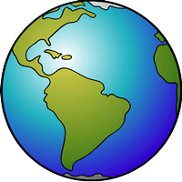

Carte des températures en France
Plus d'informations
Paramètres généraux
Pas de temps (Jours):
Évolution de la température entre deux années
Année de début:
Année de fin:
Comparez deux années pour une même station
Année n°1:
Année n°2:
Comparer deux stations différentes
Stations à comparer :
Abbeville
Ajaccio
Alençon
Bastia
Belle Île
Bordeaux
Bourges
Brest
Caen
Cap Cepet
Clermont
Dijon
w
Embrun
Gourdon
Lille
Limoges
Lourdes
Lyon
Marignane
Marseille
Metz
Millau
Mont de Marsan
Montelimar
Montpellier
Mulhouse
Nancy
Nantes
Nice
Orly
Perpignan
Pointe de Chassiron
Pointe de la Hague
Ploumanac'h
Poitier
Reims
Rennes
Rouen
Saint Girons
Strasbourg
Tarbes
Toulouse
Tours